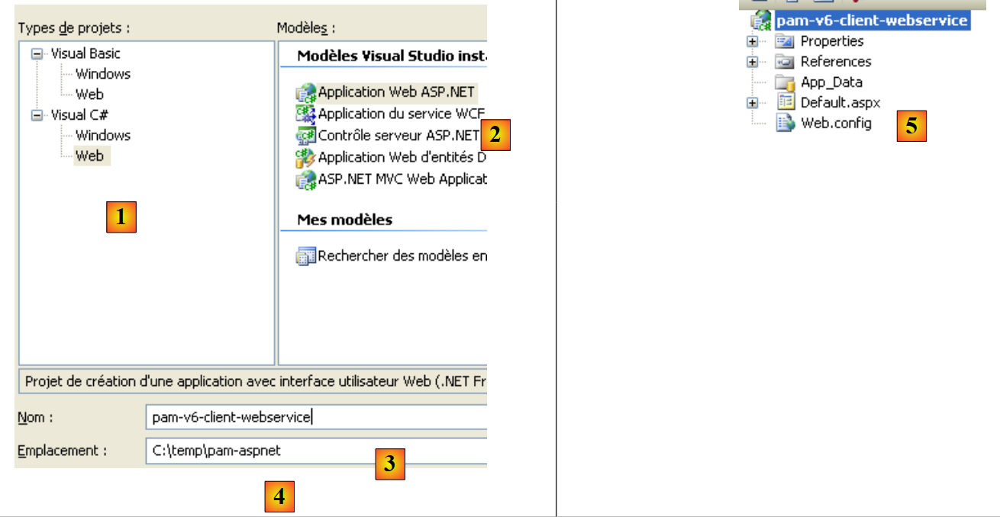
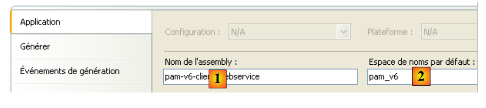
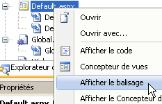

10. Die Anwendung [SimuPaie] – Version 6 – ein ASP.NET-Client eines Webdienstes
10.1. Die Anwendungsarchitektur
Wir entwickeln die Client/Server-Architektur des NUnit-Tests wie folgt weiter:
 |
In [1] wird der NUnit-Test durch die Webanwendung der Version 8 ersetzt. Dabei ist zu beachten, dass diese Architektur zwei nicht dargestellte Webserver umfasst:
- einen Webserver, auf dem der [S]-Webdienst ausgeführt wird. Dieser läuft in einer ersten Instanz von Visual Web Developer.
- einen Webserver, auf dem der Webclient [1] ausgeführt wird. Dieser läuft in einer zweiten Instanz von Visual Web Developer.
10.2. Das Visual Web Developer-Projekt für den [Web]-Client
Wir erstellen ein neues ASP.NET-Webprojekt:
 |
- In [1] wählen wir ein C#-Webprojekt aus
- In [2] wählen wir „ASP.NET-Webanwendung“
- In [3] benennen wir das Webprojekt
- In [4] geben wir einen Speicherort für dieses Projekt an
- in [5] wird das Projekt erstellt
Wir ändern einige Projekteigenschaften:
 |
- in [1] den Namen der zu generierenden Assembly
- In [2] den Standard-Namespace für die Klassen und Schnittstellen, die erstellt werden
Um das Projekt [pam-v6-client-webservice] zu erstellen, können wir die Dateien [Global.asax] und [Default.aspx] aus dem Webprojekt [pam-v4-3tier-nhibernate-multivues-monopage] abrufen und in das Projekt [pam-v6-client-webservice] kopieren. Dazu verwenden wir zunächst den Windows Explorer:
 |
- in [1] den Projektordner [pam-v4-3tier-nhibernate-multivues-monopage]
- in [2] der Projektordner [pam-v6-client-webservice] nach dem Kopieren
- der Ordner [images, pam, resources]
- die Dateien [Global.asax, Global.asax.cs]
- die Dateien [Default.aspx, Default.aspx.cs, Default.aspx.designer.cs]
- in [3], in Visual Studio Express, alle Projektdateien anzeigen, um die neu hinzugefügten Dateien anzuzeigen
- In [4] die hinzugefügten Ordner und Dateien in das Projekt aufnehmen
 |
- in [5] das neue Projekt [pam-v6-client-webservice]
An dieser Stelle können Sie das Projekt zum ersten Mal erstellen [6]. Sie erhalten die folgenden Fehlermeldungen:
Um diese Fehler zu verstehen und zu beheben, müssen wir uns die Architektur des in Entwicklung befindlichen Webprojekts ansehen:
 |
Das Projekt [pam-v6-client-webservice] ist die [Web]-Schicht [1] im obigen Diagramm. Wir sehen, dass diese Schicht mit dem Webservice-Client [C] kommuniziert, einem Client, den wir in Kürze generieren werden.
- Die Fehler 2, 5 und 7 sind darauf zurückzuführen, dass der Code in [pam-v4] auf die DLL der [Business]-Schicht verwies, eine DLL, die sich nun auf der Serverseite statt auf der Clientseite befindet.
- Die Fehler 1 und 3 haben dieselbe Ursache, betreffen diesmal jedoch die DLL der [DAO]-Schicht.
- Fehler 4 wird dadurch verursacht, dass der Code in [Global.asax] Spring verwendet und unser Projekt nicht auf die Spring-DLL verweist. Wir werden diesen Verweis hinzufügen.
- Fehler 6 wird dadurch verursacht, dass die Klasse [Employee] in der [DAO]-Schicht definiert ist, die auf der Client-Seite nicht existiert.
Die Namespace-Fehler 1, 2, 4, 5, 6 und 7 werden durch die Generierung des C-Clients für den Webdienst behoben. Fehler 3 wird durch Hinzufügen eines Verweises auf die Spring-DLL im Projekt behoben. Wir können wie folgt vorgehen:
 |
- Fügen Sie in [1] einen Verweis auf das Projekt [pam-v6-client-webservice] hinzu
- In [4] haben wir einen Verweis auf die [Spring.Core]-DLL im Ordner [lib] hinzugefügt.
Nach dem Hinzufügen dieses Verweises auf Spring zeigt die Projektgenerierung einen Fehler weniger an. Alle anderen Fehler sind auf Codezeilen zurückzuführen, die auf Objekte aus den Schichten [business] und [DAO] verweisen, die sich nun auf dem Server befinden. Wir werden sehen, dass diese fehlenden Objekte im Webservice-Client [C] generiert werden.
 |
Bevor wir den Webservice-Client [C] generieren, ändern wir den Namespace der verschiedenen vorhandenen Klassen. Diese befinden sich derzeit im Namespace [pam-v4]. Wir ändern diesen Namespace in [pam-v6]. Die betroffenen Dateien sind: Default.aspx.cs, Default.aspx.designer.cs, Global.asax.cs. Zum Beispiel:
....
namespace pam_v6
{
public class Global : System.Web.HttpApplication
{
// --- static application data ---
public static Employe[] Employes;
public static IPamMetier PamMetier = null;
....
Zeile 2: Der Namespace „pam_v4“ wurde durch den Namespace „pam_v6“ ersetzt.
Außerdem müssen Sie die Markups in den folgenden Dateien ändern: Default.aspx und Global.asax:
 |
Der Markup-Code für [Default.aspx] lautet nun:
<%@ Page Language="C#" AutoEventWireup="true" CodeFile="Default.aspx.cs" Inherits="pam_v6.PagePam" %>
<!DOCTYPE html PUBLIC "-//W3C//DTD XHTML 1.0 Transitional//EN" "http://www.w3.org/TR/xhtml1/DTD/xhtml1-transitional.dtd">
.....
Zeile 1: Das Attribut „Inherits“ gibt den Klassennamen der Datei [Default.aspx.cs] an. Wir ändern den Namespace.
Der Markup-Code für [Global.asax] lautet nun:
<%@ Application Codebehind="Global.asax.cs" Inherits="pam_v6.Global" Language="C#" %>
Oben ändern wir den Namespace des Inherits-Attributs.
Nun generieren wir den Webservice-Client [C].
 |
Um die folgenden Schritte auszuführen, muss der Webdienst [S] [pam-v5-webservice] in einer anderen Instanz von Visual Web Developer ausgeführt werden.
 |
- In [1] fügen wir dem Projekt [pam-v6-client-webservice] eine Referenz zum Webdienst [pam-v5-webservice] hinzu
- Geben Sie in [2] die URI des Webdienstes [pam-v5-webservice] ein. Dies ist die URL der WSDL-Datei für diesen Webdienst. Beim Erstellen des Webdienstes [pam-v5-webservice] haben wir angegeben, wie diese URL zu finden ist.
- In [3] weisen Sie den Assistenten an, die in [2] angegebene WSDL-Datei zu verwenden
- in [4] den gefundenen Webdienst [Service1Soap] und in [5] die von ihm bereitgestellten Remote-Methoden.
- In [6] legen wir den Namespace fest, in dem die Klassen und Schnittstellen des Clients [C] generiert werden
- Wir beginnen mit der Generierung des Clients [C]
 |
- In [1] ist der generierte Client zu sehen. Doppelklicken Sie darauf, um auf dessen Inhalt zuzugreifen.
- In [2] werden im Objekt-Explorer die Klassen und Schnittstellen des Namespace pam_v6.WsPam angezeigt. Dies ist der Namespace des generierten Clients.
- [3] zeigt die Klasse, die den Webdienst-Client implementiert.
- In [4] die vom Client [Service1SoapClient] implementierten Methoden. Hier finden wir die beiden Methoden des Remote-Webdienstes [5] und [6].
- In [2] sind die Entitätsdiagramme für die Schichten dargestellt:
- [business] : Payroll, PayrollItems
- [DAO]: Mitarbeiter, Beiträge, Zulagen
Beachten Sie im weiteren Verlauf, dass sich diese Darstellungen der Remote-Entitäten auf der Client-Seite und im Namensraum pam_v6.WsPam befinden.
Sehen wir uns die Methoden und Eigenschaften an, die von einer dieser Entitäten bereitgestellt werden:
 |
- In [1] wählen wir die lokale Klasse [Employee] aus
- In [2] sehen wir die Eigenschaften der entfernten Entität [Employee] sowie private Felder, die für die spezifischen Anforderungen der lokalen Entität verwendet werden.
Sehen wir uns den fehlerhaften Code in [Global.asax.cs] an:
 |
- In den Zeilen 3 und 4 werden Namespaces verwendet, die auf dem Server, aber nicht auf dem Client vorhanden sind.
- In Zeile 13 wird eine [Employee]-Klasse verwendet, für die der richtige Namespace nicht deklariert wurde
- In Zeile 14 wird eine IPamMetier-Schnittstelle verwendet, die dem Client unbekannt ist.
Ähnliche Probleme sind uns bereits beim zuvor besprochenen C#-Client begegnet.
In der Architektur:
 |
- Die lokale [Geschäfts-]Schicht wird durch den Client [C] vom Typ pam_v6.WsPam.Service1SoapClient implementiert, der die Schnittstelle IPamMetier nicht implementiert, obwohl er Methoden mit denselben Namen besitzt.
- Die vom generierten [C]-Client verarbeiteten Entitäten (Employee, Benefits, Contributions) befinden sich im Namensraum pam_v6.WsPam
Der Code in [Global.asax.cs] ändert sich wie folgt:
using System;
using System.Collections.Generic;
using Pam.Web;
using Spring.Context.Support;
using pam_v6.WsPam;
namespace pam_v6
{
public class Global : System.Web.HttpApplication
{
// --- static application data ---
public static Employe[] Employes;
public static Service1SoapClient PamMetier = null;
public static string Msg;
public static bool Erreur = false;
// application startup
public void Application_Start(object sender, EventArgs e)
{
// using the configuration file
try
{
// instantiation layer [metier]
PamMetier = ContextRegistry.GetContext().GetObject("pammetier") as Service1SoapClient;
// simplified list of employees
Employes = PamMetier.GetAllIdentitesEmployes();
// we succeeded
Msg = "Base chargée...";
}
catch (Exception ex)
{
// we note the error
Msg = string.Format("L'erreur suivante s'est produite lors de l'accès à la base de données : {0}", ex);
Erreur = true;
}
}
public void Session_Start(object sender, EventArgs e)
{
// put an empty simulation list in the session
List<Simulation> simulations = new List<Simulation>();
Session["simulations"] = simulations;
}
}
}
In Zeile 24 wird die Ebene [C] mithilfe von Spring instanziiert. Die für diese Instanziierung erforderliche Konfiguration ist in [web.config] definiert:
<configSections>
<sectionGroup name="system.web.extensions" type="System.Web.Configuration.SystemWebExtensionsSectionGroup, System.Web.Extensions, Version=3.5.0.0, Culture=neutral, PublicKeyToken=31BF3856AD364E35">
...
</sectionGroup>
<sectionGroup name="spring">
<section name="context" type="Spring.Context.Support.ContextHandler, Spring.Core" />
<section name="objects" type="Spring.Context.Support.DefaultSectionHandler, Spring.Core" />
</sectionGroup>
</configSections>
<spring>
<context>
<resource uri="config://spring/objects" />
</context>
<objects xmlns="http://www.springframework.net">
<object id="pammetier" type="pam_v6.WsPam.Service1SoapClient,pam-v6-client-webservice"/>
</objects>
</spring>
Zeile 16: Die [business]-Schicht ist eine Instanz der Klasse [pam_v6.WsPam.Service1SoapClient], die sich in der DLL [pam-v6-client-webservice] befindet. Erinnern Sie sich daran, dass wir das Projekt [pam-v6-client-webservice] so konfiguriert haben, dass diese DLL generiert wird.
In [Default.aspx.cs] gibt es noch einige Fehler:
 |  |
- Zeilen 5, 6: Diese Namespaces existieren nicht mehr. Die Entitäten befinden sich nun im Namespace pam_v6 oder pam_v6.WsPam.
- Zeile 98: Der generierte Client [C] hat die Klasse [PamException] nicht von der [dao]-Schicht geerbt. Dies war nicht möglich, da der Webdienst diese Ausnahme nicht offenlegt. Wir haben uns dafür entschieden, PamException durch ihre übergeordnete Klasse Exception zu ersetzen.
Der Code lautet nun:
...
using System.Web.UI.WebControls;
using pam_v6.WsPam;
namespace pam_v6
{
public partial class PagePam : Page
{
...
...
try
{
feuillesalaire = Global.PamMetier.GetSalaire(DropDownListEmployes.SelectedValue, HeuresTravaillées, JoursTravaillés);
}
catch (Exception ex)
{
...
Sobald diese Fehler behoben sind, können wir die Webanwendung ausführen:
 |
- in [1] ist die URL des Web-Clients für den Remote-Webdienst
- in [2] wurde die Mitarbeiter-Dropdown-Liste ausgefüllt. Die darin enthaltenen Daten stammen aus dem Webdienst.
Wir laden den Leser ein, diese Version 6 zu testen, eine Kopie von Version 4.